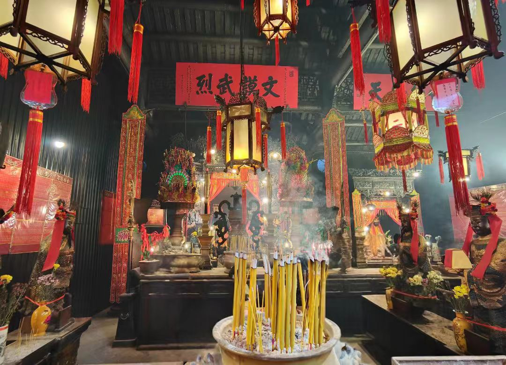

传奇：香港文武庙位于香港岛上环荷李活道，是香港现存最古老、最具历史价值的庙宇之一，也是香港开埠早期华人社会的精神与司法中心。庙宇建于1847年（清道光二十七年），供奉文昌帝君（文）和关圣帝君（武），故称"文武庙"。庙宇见证了香港从渔村到国际大都会的变迁，是香港早期华人社群自治、司法仲裁、宗教信仰的重要场所。文武庙建筑为典型岭南风格，三进三间，雕梁画栋，古色古香。庙内悬挂众多清代古匾、对联，以及由香港开埠初期华人领袖捐赠的铜钟、香炉等文物。最著名的是悬挂于正殿的"神光普照"和"至圣至神"大匾。文武庙至今香火鼎盛，不仅是香港法定古迹，更是市民祈求学业进步、事业有成、公平正义的信仰中心。每年文昌诞、关帝诞，庙宇举办盛大祭典，吸引无数信众参拜。
核心看点：
游览攻略：
交通信息：文武庙位于香港岛上环荷李活道124-126号。地铁：港岛线上环站A2出口，步行约10分钟；或港岛线中环站D2出口，步行约15分钟。巴士：多条巴士路线经荷李活道，包括26、101、104、109、111、115、182、619、681、690、692、720、722、780、788、789等。电车：乘坐往西行的电车，在文咸东街站下车，步行约5分钟。步行：从中环步行约15分钟可达。开放时间：每日8:00-18:00。免费参观。周边景点有荷李活道古董街（毗邻）、PMQ元创方（200米）、中环半山自动扶梯（300米）、兰桂坊（500米）、中环至半山自动扶梯系统（300米）、大馆（前中区警署建筑群）（400米）。距香港国际机场34公里，车程约40分钟；距香港站1.5公里，车程10分钟。建议与荷李活道古董街、PMQ元创方、大馆组合游览。
建庙背景：1841年香港开埠后，大量华人涌入香港谋生。早期华人社会需要宗教场所和精神寄托，同时需要解决纠纷的仲裁机构。1847年，由香港华人领袖卢亚贵、谭亚才等人倡议，集资兴建文武庙，供奉文昌帝君和关圣帝君。庙宇建成后，成为香港华人社会的宗教、司法、教育、社交中心。
历史沿革：①1847年：文武庙建成，初为简陋建筑。②1851年：首次扩建，增加偏殿，铸造铜钟。③1862年：第二次扩建，铸造大香炉，悬挂"至圣至神"匾。④19世纪后期：成为香港华人司法仲裁中心，设"正义堂"。⑤1976年：被列为香港法定古迹。⑥1990年：进行大规模修复。⑦2010年：再次修缮，恢复历史原貌。文武庙见证了香港从渔村到国际都市的变迁。
司法功能：在殖民地早期，英国法律不适用于华人，华人纠纷多在文武庙仲裁。①仲裁人：由华人领袖（如卢亚贵、谭亚才）担任仲裁人。②程序：双方在文武二帝前发誓，陈述事实，由仲裁人裁决。③裁决：裁决结果具有约束力，双方必须遵守。④记录：仲裁记录保存在庙内。文武庙是香港早期华人自治的重要机构。
教育功能：文武庙曾设私塾，教育华人子弟。①私塾：庙内设"文武庙义学"，教授《三字经》、《千字文》、《四书五经》等。②学生：多为华人子弟，学习中文、算术、书法。③教师：由科举落第文人或退休官员担任。④影响：培养了一批华人精英，为香港社会发展做出贡献。文武庙是香港早期教育的重要场所。
社会功能：文武庙是香港早期华人社会的中心。①宗教：提供宗教信仰和精神寄托。②司法：解决纠纷，维持社会秩序。③教育：提供基础教育。④社交：华人聚会、议事的场所。⑤慈善：救济贫困华人。文武庙是香港早期华人社会的缩影。
保护修复：文武庙作为法定古迹，得到良好保护。①1976年：被列为香港法定古迹。②1990年：香港古物古迹办事处进行大规模修复，恢复历史原貌。③2010年：再次修缮，加固结构，修复装饰。④日常维护：由东华三院负责日常管理和维护。文武庙是香港文物保护的成功范例。
总体布局：文武庙为典型岭南庙宇布局。①朝向：坐北朝南，符合风水原则。②轴线：南北中轴线，山门-天井-正殿-后殿。③院落：三进三间，前有广场，中有天井，后有后院。④功能分区：宗教区（正殿、偏殿）、公共区（广场）、服务区（办公室）。布局严谨，主次分明。
建筑形式：文武庙建筑形式为岭南传统风格。①山门：三开间牌楼式，上有"文武庙"石匾。②正殿：三开间硬山顶，前有廊庑。③偏殿：单开间硬山顶，位于正殿东侧。④天井：方形天井，用于采光、通风。⑤后院：用于存放杂物。形式简洁，实用为主。
木构架：文武庙木构架为穿斗式与抬梁式结合。①梁架：正殿为抬梁式，偏殿为穿斗式。②斗拱：有简单斗拱，承托屋檐。③雕刻：梁架有精美木雕，有龙、凤、花鸟等图案。④彩绘：梁枋有彩绘，但多数已褪色。木构架体现了清代岭南建筑的特点。
装饰艺术：文武庙装饰朴素而精美。①木雕：梁架、门窗有精细木雕。②石雕：柱础、门墩有石雕。③砖雕：山墙有砖雕装饰。④灰塑：屋脊有灰塑装饰。⑤彩绘：梁枋有彩绘，但保存不佳。装饰体现了清代岭南民间艺术的特色。
建筑材料：文武庙用材实在。①木材：用广东杉木，耐用防虫。②石材：用花岗岩做柱础、台阶。③砖瓦：用青砖、灰瓦。④灰泥：用石灰、糯米、红糖调制。材料适应当地湿热气候。
建筑特色：文武庙的建筑特色鲜明。①简朴实用：无过多装饰，以实用为主。②融合中西：部分构件受西方建筑影响。③适应气候：高窗、天井利于通风散热。④功能多元：既是庙宇，又是公所、学校。特色反映了香港早期建筑的特点。
文昌帝君信仰：文昌帝君是道教神祇，主管功名利禄、学业考试。①起源：源于星辰崇拜，文昌星主管文运。②形象：手持如意或毛笔，象征智慧与文运。③职能：护佑学子考试顺利、文人功成名就。④祭祀：农历二月初三为文昌诞，学生、考生前来祭祀。文昌信仰在香港、广东、台湾等地盛行。
关圣帝君信仰：关圣帝君是三国名将关羽，被神化为武神、财神、正义之神。①起源：历史人物关羽，因忠义勇武被神化。②形象：红面长髯，手持青龙偃月刀。③职能：主管武运、财运、正义、诚信。④祭祀：农历六月廿四为关帝诞，商人、警察、武术界人士祭祀。关帝信仰是华人社会最普遍的信仰之一。
多元祭祀：文武庙除文昌、关帝外，还供奉多种神祇。①城隍：城市保护神，主管阴间司法。②土地：地方保护神，主管地方安宁。③包公：公正廉明的象征。④华佗：医神，主管健康。⑤财神：主管财运。多元祭祀满足了信众的不同需求。
祭祀活动：文武庙有丰富的祭祀活动。①日常祭拜：信众上香、供果、叩拜。②诞辰祭典：文昌诞、关帝诞有盛大祭典。③节日祭祀：春节、中秋、重阳等传统节日有祭祀。④祈福法会：举办法会，为信众祈福。祭祀活动传承了中华传统文化。
祈福方式：信众在文武庙有多种祈福方式。①上香：一般上三支香，代表敬天、敬地、敬人。②供品：供奉水果、鲜花、糕点等。③文昌笔：求得文昌笔，祈求学业进步。④祈福带：书写愿望挂在祈福架上。⑤点灯：在灯亭点平安灯、智慧灯等。祈福方式多样，满足不同需求。
社会功能：文武庙在社会中发挥重要作用。①精神寄托：为信众提供精神慰藉。②道德教化：宣扬忠、孝、仁、义、礼、智、信。③社区凝聚：凝聚华人社群，传承文化。④旅游文化：吸引游客，传播中华文化。文武庙是香港文化的重要组成部分。
历史价值：文武庙是香港历史的活化石。①开埠见证：见证香港从渔村到国际都市的变迁。②华人社会：反映香港早期华人社会的生活、信仰、司法。③建筑史：是香港现存最古老的庙宇建筑之一。④文物史：保存大量清代文物，如古匾、铜钟、香炉。文武庙是研究香港历史的重要实物资料。
建筑价值：文武庙是清代岭南建筑的典范。①布局：三进三间，典型岭南庙宇布局。②结构：穿斗式与抬梁式结合的木构架。③装饰：木雕、石雕、砖雕、灰塑、彩绘等装饰艺术。④材料：使用当地材料，适应当地气候。文武庙是香港早期建筑的珍贵实例。
艺术价值：文武庙是艺术的宝库。①书法艺术：古匾、对联是书法精品。②雕刻艺术：木雕、石雕、砖雕技艺精湛。③铸造艺术：铜钟、香炉铸造工艺高超。④建筑艺术：整体建筑和谐统一。文武庙是"艺术的博物馆"。
文化价值：文武庙是香港文化的重要载体。①信仰文化：文昌、关帝信仰的传承。②司法文化：早期华人司法仲裁的见证。③教育文化：早期华人教育的场所。④社区文化：早期华人社交的中心。文武庙是香港文化的"记忆库"。
社会价值：文武庙在现代社会中仍发挥重要作用。①宗教信仰：为信众提供精神寄托。②文化传承：传承中华传统文化。③旅游观光：吸引游客，促进经济。④教育研究：为学者提供研究资料。文武庙是香港社会的重要组成部分。
保护与传承：文武庙作为法定古迹，得到良好保护。①法律保护：1976年被列为香港法定古迹。②机构保护：由东华三院负责日常管理。③修复保护：1990年、2010年进行大规模修复。④研究展示：开展研究，出版刊物，举办展览。⑤教育推广：举办导览、讲座，传播历史文化。⑥社区参与：社区居民参与保护，形成保护网络。文武庙的保护经验，为都市古迹保护提供了成功范例。